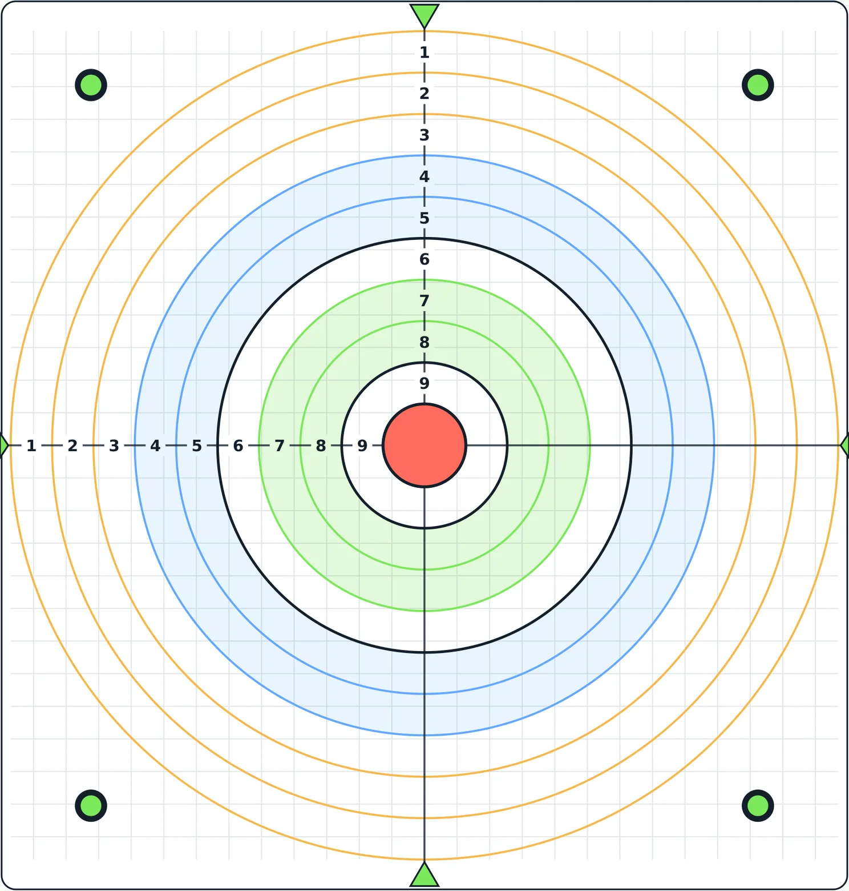
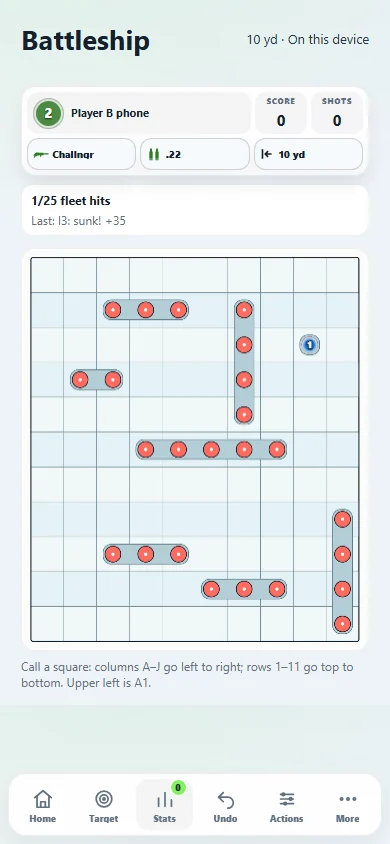

View artwork
Current artwork
Classic
A familiar starting point for practice and zero checks.
Ronin Range
Ronin Range brings target games, practice, scoring and equipment context to phones, tablets and desktops. Core local workflows work without requiring an account, camera, appliance server or internet connection.
For range practice, friendly games and honest session history.
 View screenshot
View screenshot
Local Play, Games, Create and Stats keep range sessions usable without an appliance. Scoring, Classic Zero, equipment context and saved rounds remain part of the same player workflow.
Example in practice: A player can choose Battleship and follow a round on the phone-format board. The image is a browser E2E capture, not a measurement of physical target accuracy.

View screenshotClassic target practice sits alongside games inspired by golf, baseball, and head-to-head challenges. These are selected design previews from the local target library; physical acceptance is tracked separately.
Five current selections and one concept study. Browse at your own pace.
The complete elevated list, without a wall of thumbnails. Linked names lead to featured artwork; a current selection is not necessarily a field-verified print.
Also in development: Mirror Shuffleboard is a concept study; Nine Squares portrait R5 is a separate candidate. Neither replaces the current library selection. Digital, print, and physical acceptance remain independent.
Play, Games, Create, Stats, Zero and local backup make up the documented browser-tested foundation. Printed-target accuracy, portable identity and optional camera scoring follow their own validation paths.
Explore qualification milestonesThe current browser-tested flow includes games, scoring, equipment context and backup/restore without making a server or camera mandatory.
Physical target sizing, installed-device release checks, cross-device history and optional camera-assisted scoring remain distinct milestones.
Current verification is for the documented local app/browser workflows. Camera-assisted scoring and public rollout follow their own tests.